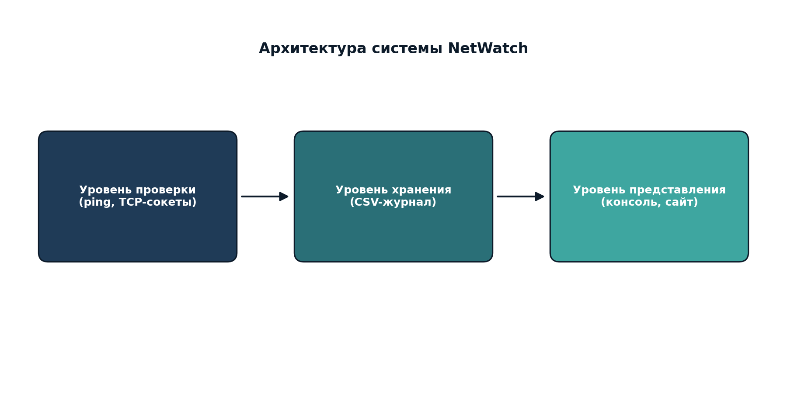

NetWatch: техническая реализация
Программа проверяет доступность сетевых узлов с помощью ping и проверяет открытость TCP-портов через модуль socket, после чего сохраняет результаты в CSV-журнал.

Пример кода: проверка TCP-порта
def check_port(host, port, timeout=2.0):
try:
with socket.create_connection((host, port), timeout=timeout):
return True, "Открыт"
except socket.timeout:
return False, "Тайм-аут"
except ConnectionRefusedError:
return False, "Закрыт"
except OSError:
return False, "Недоступен"
Пример журнала проверок
| Дата и время | Узел | Тип проверки | Порт | Статус |
|---|---|---|---|---|
| 2026-09-08 14:20:00 | Google DNS | PING | - | OK |
| 2026-09-08 14:20:00 | Google DNS | TCP | 443 | OK |
| 2026-09-08 14:20:00 | GitVerse | TCP | 443 | OK |
Модификация проекта
- Гибкий список целей мониторинга без изменения основной логики.
- Раздельная диагностика ошибок (тайм-аут, ошибка DNS, отказ в соединении).
- Накопительный журнал с историей проверок.
- Кроссплатформенная поддержка Windows и Unix-подобных систем.
Полный туториал с пошаговыми инструкциями находится в файле docs/netwatch_tutorial.md в репозитории проекта.